Grafiken
Kurze, verständliche Übersichten rund um KI im Unternehmen. Neue Darstellungen kommen laufend dazu.
Welche KI-Lösung passt zu Ihrem Unternehmen?
Vier Wege, KI einzuführen, im Vergleich nach Einstieg, Datenschutz, Qualität und Kosten. Die Angaben sind Richtwerte, Stand Oktober 2026.


Unsicher, welche Variante für Sie passt? Wir beraten Sie unverbindlich.